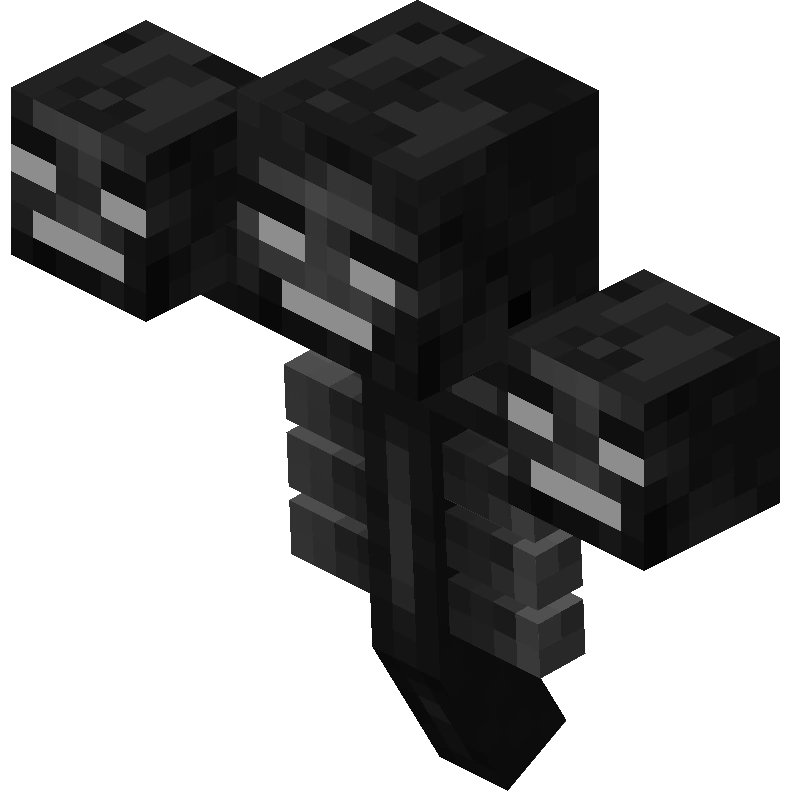

обитающий в Крае. Уничтожает большинство блоков на своём пути, пролетает сквозь те блоки, которые не уничтожает.Изначально спаунится единожды в Крае, может быть заспаунен повторно при помощи кристаллов Края. При помощи кристаллов Края он восстанавливает своё здоровье.
Иссушитель — моб-босс, который был добавлен в официальной версии 1.4.2. Имеет больше всего здоровья (300 ИЛИ 600 Сер.svg) из всех мобов в стандартном Майнкрафте.Также атакует любого моба.
